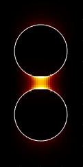

nanobem Toolbox

nanobem is a toolbox for the solution of Maxwell's equations for metallic and dielectric nanoparticles using a Galerkin boundary element method (BEM) approach. Details of the computational approach are described in
- Hohenester, Nano and Quantum Optics (Springer 2020).
- Hohenester, Reichelt, Unger, Nanophotonic resonance modes with the nanobem toolbox, CPC 276, 108337 (2022); CPC 294, 108949 (2024).
When you publish results with the nanobem toolbox, please cite the CPC papers.
Contents
Short description of the toolbox
The toolbox provides a number of general classes that allow setting up the nanoparticle boundaries and materials, and solving the full Maxwell's equations or the quasistatic approximation for planewave and dipole excitations. We additionally provide a contour integral method (CIM) solver for the computation of resonance modes (quasinormal modes), a solver for characteristic modes, a solver for quasistatic eigenmodes, an implementation for mesoscopic boundary conditions using Feibelman parameters, as well as simulations for stratified media using the matrix-friendly approach of Chew.
Throughout the toolbox, lengths are measured in nanometers and frequencies are given in terms of the wavenumbers of light in vacuum. For instance, a photon energy of 2 eV has to be converted to a wavenumber according to
% photon energy in eV ene = 2; % convert to wavelength in nm units; lambda = eV2nm / ene; % convert wavelength to wavenumber k0 = 2 * pi / lambda;
For the simulation of the full Maxwell equations, the electric field has to be scaled by the strength of the incoming field. The magnetic field used in the simulations is multiplied with the free-space impedance , such that , have the same units. We use SI units throughout.
The toolbox succeedes the MNPBEM toolbox written by the same developer. The main difference is now the use of a Galerkin scheme which makes the simulations more accurate and safely allows for the consideration of dielectric particles in the nanometer to micron range. In comparison to MNPBEM, the simulations are expected to be slower and the use of the toolbox functions is probably less flexible.
Examples
- Getting started with the solution of the full Maxwell's equations.
- Getting started with the solution of the Maxwell's equations using the quasistatic approximation.
- Collection of nanobem examples.
Copyright
The nanobem toolbox is distributed under the terms of the GNU General Public License. See the file COPYING in the main directory for license details.
Developers
Copyright 2022-2025 Ulrich Hohenester